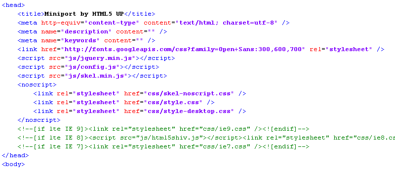

On Page Editing
When a site-owner notices some content on her website that needs alteration, the current workflow in Couch (as in most other CMSes) dictates that she leave the page being currently viewed to enter the admin-panel. Once in the admin-panel, she needs to hunt down the page in question, find the relevant editable region, make the desired changes to it and finally save the page for the changes to appear on the front-end.
Apart form the obvious disconnect between the place where change is required and where the change needs to be done, there is one more issue with this approach - usually the way the text being edited appears in the admin-panel is nothing like how it does on the front-end (the typography, the colors etc. seldom match). This necessitates a jumping back and forth between the admin-panel and the front-end to make sure the changes turn up displaying as expected.
An alternative to the mentioned dedicated admin-panel paradigm could be where the user simply clicks right on the place that requires changes (or on a nearby link), edits the content on the page itself and saves. This is 'On Page' editing. Hardly a new concept really, and with the obvious benefits discussed so far you might well ask why most CMSes (including Couch) do not use it?
The reason is that implementing on-page editing entails some very sticky technical issues that, almost always, out-weigh the expected advantages. This issue has been discussed before on our forums as has been done by others elsewhere.
Broadly speaking, the challenges are two-fold:
- On-page editing lends itself naturally to only 'text' fields. Non-text editable regions (like image, repeatable-regions etc.) or regions that normally are not output on the front-end (folders, page-name etc.) will require quite a bit of bending backwards - which brings up the second point
- Whatever method is used to implement on-page editing needs to be as unobtrusive as possible. Since the solution needs to work on any possible front-end design, it cannot assume any particular JS library to be present. Neither can it afford to wantonly inject its own libraries into the front-end as this could risk breaking the site's design.
Couch's take on the issue: the 'inline' addon
As a possible solution to the two, seemingly, mutually exclusive requirements, please allow me to introduce the 'inline' addon of Couch.
This addon recognizes the fact that there are two different ways editable regions need to be handled in on-page editing and so offers two distinct ways of doing so -
- Inline editing: The classic 'in place' editing. Simply click on the content itself and edit it right there. However, it works with text content only (specifically, 'text', 'textarea', 'richtext' and 'nicedit' types of editable regions).
- Popup editing: For non-textual regions or hidden text regions, this plugin outputs a link that can be placed nearby the contents. Clicking on the link brings up a popup window with only the relevant region(s) available for editing. This method will work for all editable regions - even the textual ones if you so desire.
Let us take a deeper look at how the two kinds of on-page editing work. But before we do that, we need to enable the addon first.
It requires the usual procedure of making an entry in the 'couch/addons/kfunctions.php' file.
If there is no 'kfunctions.php' in the 'addons' folder, please rename the 'kfunctions.example.php' file to 'kfunctions.php'.
Open kfunctions.php in your text editor and add the following line to it
require_once( K_COUCH_DIR.'addons/inline/inline.php' );
With the addon enabled, we can now use the tags provided by it to implement on-page editing on any template.
To demonstrate how onpage editing works in Couch, I've gone ahead and completely Couchified (adding onpage editing as well) the popular single-page HTML5 template - Miniport.

You can download the ported version and take it for a spin to see for yourself how everything works.
For this particular tutorial, I'll take you step-by-step through the process of adding onpage editing to only the first section of the template.
Following is the section we'll be working with.

Following is the HTML markup behind the section (with the four possible editable portions within it highlighted)

One point I'd like to emphasize here is that implementing onpage editing requires no changes, whatsoever, to the way you normally implement a site using Couch. That is to say, you create your templates, define the editable-regions etc. exactly the way you'd normally do and once the site is ready we can bolt on the onpage editing component to the functioning site.
Taking the example of the section we are working with, if you take a look at the attached source files, you'll find that it required defining 4 editable regions - intro_image (type image), intro_title (type nicedit), intro_text (type richtext) and intro_button (type text).
The modified HTML markup with Couch's editable regions added in now looks like this -
So far we have proceeded exactly how we would have with any normal Couch managed template.
In fact, if there were no onpage editing to be added, this would have finished our work on the section with nothing more to do.
However, for implementing onpage editing a finished Couch template is where we start. So lets begin.
Adding onpage editing to a template is a two-step procedure -
1. The first step is always the addition of the following tag in the HEAD section of the template
<cms:load_edit />
This was the original markup of our template -

which becomes the following after adding the mentioned tag -
This step takes care of loading all the JS/CSS libraries required by the tags we'll add in the second step below.
2. This second step is where all the fun happens.
Here we'll add the tags that 'inject' onpage editing to existing editable regions.
Take a look again at the four existing editable regions in the section we are working on -
If you remember from our earlier discussion, onpage editing can take two forms -
a. Inline editing for text elements
b. Popup editing for non-text (or hidden textual) elements
As you can see from the image above, the regions highlighted in red are text. Of the regions in green, the image is, of course, non-textual. The button text, although it looks textual, is actually a link element and hence has to be treated as non-text.
OK, so let us handle the non-text elements first.
Popup-editing:
Following is how the markup for the image exists as of now
<div class="4u">
<span class="me image image-full"><img src="<cms:show intro_image />" alt="" /></span>
</div>
We'll add a popup_edit tag near it specifying the name of the editable region handled through the popup (the image region in this case)
<div class="4u">
<span class="me image image-full"><img src="<cms:show intro_image />" alt="" /></span>
<cms:popup_edit 'intro_image' />
</div>
Saving the template and visiting it as admin will show the following change

Notice the 'Edit' link where we placed the popup_edit tag.
The text shown for the link can be changed from the default 'Edit' to anything of your choice using the 'link_text' parameter of the popup_edit tag.
You can also style this link anyway you like - it is a regular anchor element with its class set as 'k_inline'. You can add you own classes using the 'class' parameter. This can be used, for example, to show a pencil icon instead of the text.
Clicking on the link will bring up the promised popup.

You'll recognize that the editable region shown is the same as you see in the backend admin-panel.
A new image can be selected exactly the way we do in the admin-panel - the 'Browse server' button will bring up the image-explorer with all its related paraphernalia.
The second non-text region i.e. the button text can be handled identically.
The existing markup
<a href="#work" class="button button-big"><cms:show intro_button /></a>
can be appended with a popup_edit tag
<a href="#work" class="button button-big"><cms:show intro_button /></a>
<cms:popup_edit 'intro_button' link_text='Edit button' />

In both the cases above, we've specified only one editable region as parameter to the popup_edit tag. If the use-case requires, we can also specify multiple editable regions by separating the names with a '|' (pipe) character. For example, the following definition -
<cms:popup_edit 'intro_image|intro_title|intro_text' />
would show all the three specified regions in the popup
In case you didn't notice, the popup has no problems displaying the textual regions. In fact, it can handle all types of Couch editable regions - it is just that the text types can be handled in a more elegant manner using inline (as opposed to popup) editing. We'll see that next.
Inline-editing:
The tag for inline-editing is inline_edit. Let us see how it works.
The existing markup for the first text region is as follows
<header>
<h1><cms:show intro_title /></h1>
</header>
Add an inline_edit tag to it as follows
<header>
<h1 <cms:inline_edit 'intro_title' /> ><cms:show intro_title /></h1>
</header>
IMP: Please notice that the inline_edit tag is always added as a parameter to a block-level HTML element.
Visiting the template should show the following
Clicking anywhere within the text will display the editing toolbar
Changing the heading now only requires editing it directly and clicking the 'save' icon.
If the light-yellow outline, demarcating the inline editable regions, bothers you, it can be turned off by setting the 'no_border' parameter of the load_edit tag we placed in the header
<cms:load_edit no_border='1' />
Let us add inline editing to the final region and complete our tutorial.
The existing markup is as follows -
<cms:show intro_text />
Now, if you recall the caveat a little way up that said the "the inline_edit tag is always added as a parameter to a block-level HTML element" - you'll notice the quandary here. There is no block level element around the region.
This is one place where a little fudging of the original markup becomes imperative. We can solve such issues by wrapping a block level HTML element (like a DIV or P) around the region in question.
This is what our code becomes -
<div <cms:inline_edit 'intro_text' /> ><cms:show intro_text /></div>
As you can see, we chose to add a parent DIV element and then add the inline_edit tag to it.
The result -
Wrapping up...
From our discussion so far, we've really seen everything that needs to be known about implementing onpage editing.
In short, adding onpage editing to any Couch managed template involves only judiciously placing the two tags i.e. inline_edit and popup_edit at the right spots.
You must have certainly noticed one behaviour of these tags by now - they come into action only when the person visiting the webpage is a Couch admin. For everybody else, the tags practically do not exist.
You can, however, turn these tags off even for the admins. This could be, for example, to give the admin a real feel of how the modified page would look like to the general public. Let us see how.
Place the following statement somewhere at the top of the template (i.e. before any of the three tags we have seen so far) -
<cms:no_edit />
and you'll find that the onpage editing functionality disappears from our template completely.
Of course, that is not much good. It'd be better if the admin could selectively 'toggle' this no_edit tag on/off.
We can use the standard Couch tags for doing that. I'll describe one quick method of doing so below.
Please bear in mind that the following method is just one of the N number of ways we could implement the toggle - feel free to code/design you own if this method does no suit you.
My solution relies on using a session variable to conditionally output the no_edit tag. The line of code mentioned above now becomes
<cms:if k_user_access_level ge '7' && "<cms:not "<cms:get_session 'inline_edit_on' />" />" >
<cms:no_edit />
</cms:if>
As you can see, the code kicks in only for admin. If checks whether a session variable named inline_edit_on is on. If not, it outputs the no_edit tag and thus turns off onpage editing.
It now becomes a simple matter of setting the value of the session variable to enable/disable onpage editing.
Place the following FORM code somewhere at the bottom of the template
<cms:if k_user_access_level ge '7' >
<br style="clear:both">
<cms:form method='post' anchor='0' style="float:left;">
<cms:if k_success>
<cms:if "<cms:get_session 'inline_edit_on' />" >
<cms:delete_session 'inline_edit_on' />
<cms:else />
<cms:set_session 'inline_edit_on' value='1' />
</cms:if>
<cms:redirect k_page_link />
</cms:if>
<cms:if "<cms:get_session 'inline_edit_on' />" >
<cms:input name='submit' type="submit" value="Turn Edit Off" />
<cms:else />
<cms:input name='submit' type="submit" value="Turn Edit On" />
</cms:if>
</cms:form>
</cms:if>
Submitting the form simply toggles the value of the session variable named inline_edit_on and refreshes the page. The current state of the variable then dictates whether or not onpage editing becomes available.
That brings us to the end of our little tutorial.
Following is a complete documentation of all the tags made available by the inline module.
Tags Documentation:
The following 4 tags are made available by this module:
1. load_edit
This tag needs to be placed in the <HEAD> to load the js/css libraries required by the other tags. This is always first step in implementing on-page editing in any template.
<cms:load_edit />
The load_edit tag supports the following optional parameters:
skip_ckeditor
The component working behind lnline editing (as opposed to popup editing) is CKEditor. In case you want to use only popup editing, the inline editing can be done away with by setting this parameter to '1'.
no_border
By default, inline editing places a light-yellow border around the editable container element. This behaviour can be turned off by setting this parameter to '1'.
prompt_text
If the user tries to navigate away from a page with unsaved contents, she is asked to confirm her action. The text used for the prompt can be changes by setting it as the value of this parameter.
2. popup_edit
This tag is used to output an anchor element clicking on which opens up a pop-up window. The window shows the specified editable regions sought to be edited.
<cms:popup_edit 'my_text' />
Multiple editable regions may be specified by using the 'pipe' separator between their names e.g.
<cms:popup_edit 'my_text|my_richtext|k_page_folder_id' />
Please note in the examples above that we have specified only the field-names. There is no mention about the template or (if the template is clonable) the page to which the field(s) belong. This is because the popup_edit tag picks up the information about template and page from the context in which the tag is used.
So, for example, if the popup_edit tag is used within the page_view of a template, it'll use the current template and the page in context.
If, however, you wish to edit regions belonging to a different template or page than the one where this tag is being used (e.g. editing regions belonging to 'globals.php' with the link placed on 'blog.php'), the right context needs to be specifically provided. This can be done by wrapping the popup_edit tag around by a pages tag block that fetches the template/page containing the editable regions being edited e.g.
<cms:pages masterpage='globals.php' >
<cms:popup_edit 'site_name|meta_desc' />
</cms:pages>
or
<cms:pages masterpage='portfolio.php' page_name='some-work' >
<cms:popup_edit 'description' />
</cms:pages>
The popup_edit tag supports the following parameters:
fields
Names of the editable regions to be displayed in the popup for editing. Use the '|' (pipe) character to separate multiple names.
link_text
The default text shown for the link is 'Edit'. This can be changed by specifying a custom text as value of this parameter.
prompt_text
Upon saving changes within the popup window, the parent page is always refreshed for the changes to be seen. If it happens that there is any inline editable region on the page (created by the inline_edit tag below) with modified but unsaved changes, this refresh will cause the changes to be lost.
To prevent this from happening, in such cases, Couch prompts you to first save the inline modifications. The text used for the prompt may be changed by this parameter.
class
The anchor element of the link always has a class 'k_inline'. If required, you can set any additional classes using this parameter.
3. inline_edit
This tag is used to convert any block-level HTML element into a true inline editor.
For example, suppose a template has a richtext editable region named 'my_description' and this is how it is being output on the front-end (without inline-editing being implemented yet) -
<div id="desc" >
<cms:show my_description />
</div>
- this is how we can convert the container 'div' element into an inline editor that saves back its contents into the 'my_description' field
<div id="desc" <cms:inline_edit 'my_description' /> >
<cms:show my_description />
</div>
Please notice that we need to add the inline_edit tag as if it were an unnamed parameter of the element being converted.
The inline_edit tag supports the following parameters:
fields
Name of the editable region into which the inline contents will be saved. Only a single region can be specified.
toolbar
The default set of buttons shown in the toolbar can be modified by setting this parameter.
Please see the 'toolbar' parameter of Editable region type: richtext for details as the two work exactly the same.
custom_toolbar
Please see the 'custom_toolbar' parameter of Editable region type: richtext.
custom_styles
Please see the 'custom_styles' parameter of Editable region type: richtext.
4. no_edit
This tag disables any of the three above-mentioned tags that come after it in a template.